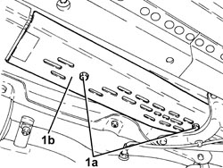
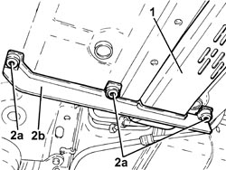
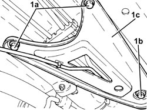
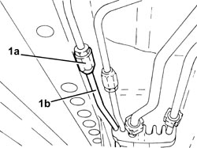
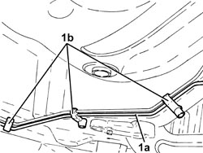
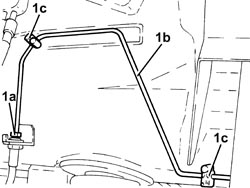
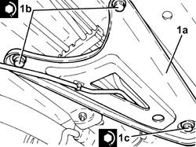

3340B67 RIGID PIPE FROM RIGHT REAR BRAKE CONNECTOR - R.R.
- Path
- Procedures > 33 BRAKES > 3340 ANTI-LOCK BRAKING SYSTEM (ABS) > 3340B ABS SYSTEM PIPES > 3340B67 RIGID PIPE FROM RIGHT REAR BRAKE CONNECTOR - R.R.
- Kind
- repair procedure (removal / refitting; the operation number is the code)
- Applies to
- all engines; all production periods
- Interactive page
- https://sloeber94.github.io/elrnDB-fCrm/en/#/194000508
Applies to: all engines; all production periods
 Removing
Removing
 Refitting
Refitting- Position the vehicle on a lift.
Op. 4450B06 LEFT REAR WHEEL - R.R
Op. 7055B44 LEFT REAR WHEEL ARCH LINER - R.R
- Remove the protective cap from the bleed valve on the brake caliper.
- Connect the recovery device (pipe and reservoir) to the brake caliper bleed valve.
- Loosen the bleed valve on the brake caliper and wait until the brake-clutch reservoir and pipes drains.
1. Working underneath the vehicle, undo the bolts (1a) and remove the front pipe protection (1b).

Applies to: all engines; all production periods
1. Undo the bolts and remove the rear pipe protection.
2. Undo the bolts (2a) and remove the bracket (2b).

Applies to: all engines; all production periods
1. Undo the bolts (1a) and (1b), then remove the right underbody reinforcement (1c).

Applies to: all engines; all production periods
1. Undo the connector (1a) and disconnect the rigid pipe from the connector to the right rear brake (2b), rigid pipe side.

Applies to: all engines; all production periods
1. Release the rigid pipe from the connector to the right rear brake (1a) from the underbody fastenings (1b).

Applies to: all engines; all production periods
1. Undo the connector (1a), disconnect the rigid pipe from the connector to the right rear brake (1b), flexible pipe side and remove it after having released it from the fastenings (1c).

Applies to: all engines; all production periods
Refitting
Removing- Place the rigid pipe from the connector to the right rear brake back in its housing and secure it using the underbody bands.
- Connect the rigid pipe from the connector to the right rear brake, flexible pipe side and tighten the connector to the recommended torque.
Component | Fastening | dia | Value (daNm) | Validity |
|---|---|---|---|---|
Brake pipe connectors | Connector | M10/M12 | 1.4 ÷ 1.8 |
- Connect the rigid pipe from the connector to the right rear brake, rigid pipe side and tighten the connector to the recommended torque.
Component | Fastening | dia | Value (daNm) | Validity |
|---|---|---|---|---|
Brake pipe connectors | Connector | M10/M12 | 1.4 ÷ 1.8 |
1. Place the underbody reinforcement (1a) in its housing and secure it tightening the new bolts (1b) and (1c) to the recommended torque.
Component | Fastening | dia | Value (daNm) | Validity |
|---|---|---|---|---|
Underbody reinforcements | Inner bolt (to replace) | M12 | (bodyshell side) 8.1 - 9.9 + 45° |
Component | Fastening | dia | Value (daNm) | Validity |
|---|---|---|---|---|
Underbody reinforcements | Outer bolt (to replace) | M10 | (bodyshell side) 5.0 - 6.1 + 45° |
Component | Fastening | dia | Value (daNm) | Validity |
|---|---|---|---|---|
Underbody reinforcements | Bolt (to be replaced) | M12 | (front suspension frame side) 9.0 - 11.0 + 90° |

Applies to: all engines; all production periods
- Fit the bracket in its housing and secure it using the bolts.
- Place the rear pipe guard in its housing and secure it using the bolts.
- Place the front pipe guard in its housing and secure it using the bolts.
Op. 0010T64 BRAKE AND/OR CLUTCH FLUID CHECK LEVEL AND TOP UP AS NECESSARY
Op. 0010T65 HYDRAULIC BRAKE SYSTEM - BLEED AIR
Op. 7055B44 LEFT REAR WHEEL ARCH LINER - R.R
Op. 4450B06 LEFT REAR WHEEL - R.R
- Remove the vehicle from the lift.